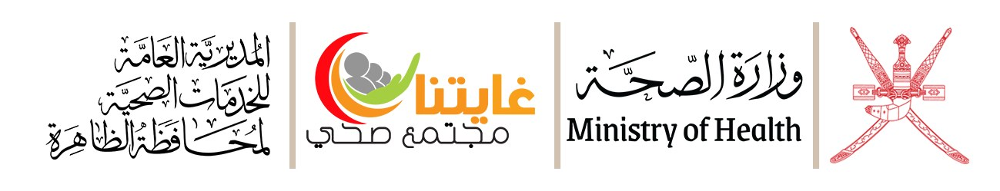

اليوم العالمي
لغسل اليدين
يداك تلمسان كل شيء: الطاولة، مقبض الباب، القلم، الكرة في الفسحة. والجراثيم تنتقل معها بسرعة! اكشف أسرار الأيدي الغامضة، وتعلّم الطريقة الصحيحة للغسل، ثم اختبر نفسك.
زميلنا المعلّم، تمرّ بين يديك في اليوم الدراسي الواحد عشرات الدفاتر وأوراق الاختبارات والأقلام ومقابض الأبواب، وأنت القدوة الأولى لطلابك. أعددنا لك هنا معلومات مختصرة تخصّ يومك في المدرسة، والخطوات المعتمدة لغسل اليدين، واختبارًا سريعًا.
الأيدي الغامضة
تسع أيدٍ… تسع رسائل لك
خلف كل يد سرّ لا تعرفه بعد، وعليها جراثيم تنتظر الصابون. اضغط على أي يد لتغسلها وتكشف المفاجأة. هل تستطيع كشف الأيدي التسع كلها؟
خلف كل يد معلومة أو نصيحة تخصّ يومك في المدرسة. اضغط على أي يد لتكشفها، فبعضها قد يفاجئك.
كيف تنتقل الجراثيم؟
في هذا الفصل طالب واحد فقط يداه ملوثتان. تابع يومًا دراسيًا كاملًا وشاهد كيف تنتقل الجراثيم من يد إلى يد، ثم أعد اليوم نفسه مع غسل اليدين وقارن النتيجة.
في هذه المدرسة زميل واحد فقط يداه ملوثتان. تابع يوم عمل كاملًا وشاهد كيف تنتقل الجراثيم بين الزملاء عبر المصافحة والأوراق والأجهزة المشتركة، ثم أعد اليوم مع غسل اليدين وقارن النتيجة.
أيديهم ملوثة
جرّب أيضًا: اضغط على أي شخص ملوّث لتغسل يديه بنفسك.
محاكاة مبسّطة للتوضيح، وأرقامها تقريبية وليست نتائج علمية.
الطريقة الصحيحة لغسل اليدين
شاهد الفيديو، ثم اغسل يديك مع المؤقت خطوة بخطوة. الغسل الكامل يستغرق من 40 إلى 60 ثانية، أي أطول مما تتوقع!
شاهد الفيديو التوعوي، وراجع الخطوات السبع المعتمدة مع المؤقت. الغسل الكامل يستغرق من 40 إلى 60 ثانية، وهي مدة نختصرها كثيرًا بين الحصص دون أن نشعر.
فيديو توعوي: لماذا نغسل أيدينا؟ إعداد ممرض الصحة المدرسية داود اليعقوبي.
اغسل يديك معنا
اضغط «ابدأ المؤقت» وافرك يديك مع كل خطوة (6 ثوانٍ لكل خطوة).
متى أغسل يديّ؟
أنت القدوة
الطلاب يتعلّمون مما يرونه أكثر مما يسمعونه. عادات صغيرة منك تصنع فرقًا في صحة الفصل كله.
أمام طلابك
- اعطس أو اسعل في منديل أو في باطن المرفق، ثم اغسل يديك.
- اغسل يديك قبل الفسحة مع طلابك، لا بعدهم.
- تجنّب لمس عينيك وأنفك وفمك أثناء الحصة.
على مكتبك
- معقّم يدين بتركيز 60% كحول على الأقل لما بين الحصص.
- مناديل ورقية وسلة مهملات قريبة.
- لا تشارك أدواتك الشخصية، مثل القلم والكوب.
عند مرض طالب
- وجّهه إلى ممرض المدرسة أو غرفة الصحة المدرسية.
- اغسل يديك قبل مساعدته وبعدها.
- أبلغ الإدارة إذا تكررت الحالات المتشابهة في الفصل.
انقل الرسالة
- شارك هذه الصفحة مع طلابك في وضع «أنا طالب».
- خصّص دقيقة في الحصة ليطبّقوا الخطوات السبع مع المؤقت.
- شجّع على تعليق ملصقات الخطوات قرب المغاسل.
ماذا تود أن تقول في هذا اليوم؟
رسائل معلمينا لكم
شارك زملاءك وطلابك رسالة قصيرة بمناسبة اليوم العالمي لغسل اليدين. تظهر رسالتك هنا مع اسمك واسم مدرستك بعد مراجعتها.
رسائل كتبها معلمون من مدارس المحافظة بمناسبة اليوم العالمي لغسل اليدين.
صح أم خطأ؟
خمس عبارات سريعة. هل تعرف الإجابة؟ اختر وستعرف السبب.
خمس عبارات يخطئ فيها كثير من الكبار. اختر إجابتك لترى التوضيح.